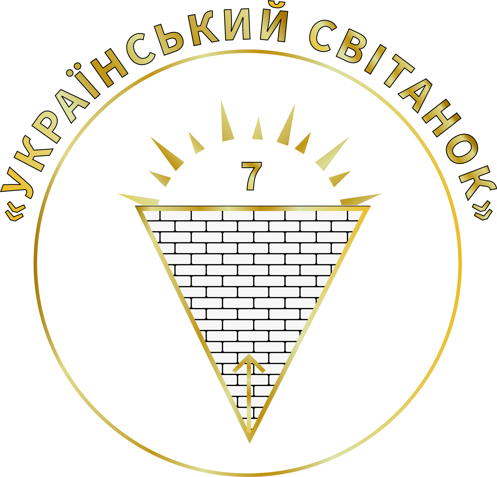

Ціль
- Глава 1: Назва та Цілі
- 1.1. Назва організації: Український Світанок
-
1.2. Цілі:
- - Продвиження прозорості в ухваленні рішень.
- - Сприяння демократичним принципам та участі громадян.
- - Розширення доступу до інформації про діяльність організації.
- Глава 2: Структура та Управління
-
2.1. Загальні Збори Членів:
- - Регулярні збори для обговорення ключових питань.
- - Прийняття рішень більшістю голосів.
-
2.2. Рада Директорів:
- - Формування представників членів.
- - Прийняття відповідальності за стратегічні рішення.
-
2.3. Прозорість Управління:
- - Регулярні звіти про діяльність для членів.
- - Відкритість фінансів та прийняття рішень.
- Глава 3: Процеси Прийняття Рішень
-
3.1. Консенсус і Демократія:
- - Рішення приймаються з урахуванням думки більшості.
- - Спрямування до досягнення консенсусу.
-
3.2. Відкриті Дебати:
- - Проведення обговорень перед важливими рішеннями.
- - Залучення членів в процес прийняття рішень.
- Глава 4: Прозорість та Інформування
-
4.1. Доступ до Інформації:
- - Відкритий доступ до статуту, рішень та звітів.
- - Публікація ключових документів на веб-сайті.
-
4.2. Зворотний Зв'язок:
- - Активний зворотний зв'язок з членами та громадськістю.
- - Врахування пропозицій та зауважень при прийнятті рішень.
- Глава 5: Заключні Положення
-
5.1. Внесення Змін до Статуту:
- - Процес змін статуту з участю членів.
- - Дотримання демократичних принципів при змінах.
-
5.2. Діяння Статуту:
- - Статут набуває чинності з моменту затвердження та зобов'язує всіх членів.
- Глава 6: Електронні Платформи та Боротьба з Корупцією (продовження)
-
6.1. Боротьба з корупцією:
- - Строга політика нульової терпимості до корупції в середині та поза організацією.
- - Регулярні аудити для забезпечення прозорості фінансової діяльності.
- Глава 7: Духовне Наповнення
-
7.1. Мета організації:
- - Підтримка різностороннього розвитку особистості.
- - Здійснення проектів та заходів, спрямованих на духовний ріст членів.
-
7.2. Навчання та культурні ініціативи:
- - Організація освітніх програм та заходів, спрямованих на розширення культурних та духовних горизонтів.
- - Підтримка творчості та самовираження членів.
- Глава 8: Прозорість та Інформування
-
8.1. Співпраця з Науковим Співтовариством:
- - Активна співпраця з вченими та науковою спільнотою для розробки та впровадження інновацій.
- - Підтримка досліджень, спрямованих на соціальний та технологічний прогрес.
-
8.2. Орієнтація на Людину:
- - Забезпечення того, щоб наукові дослідження та технологічний прогрес служили благополуччю та потребам людей.
- - Активна участь членів організації у визначенні пріоритетів та напрямів розвитку науки та технологій.
- Глава 9: Протидія Корупції та Звільнення з Посад
-
9.1. Протидія корупції:
- - Категоричне осудження будь-яких проявів корупції серед членів організації.
- - Систематична інформаційна кампанія щодо наслідків корупційних дій.
-
9.2. Звільнення з посад:
- - Введення механізму швидкого звільнення осіб, причетних до корупційних практик, навіть на вищих рівнях керівництва.
- - Дотримання процедур звільнення в найкоротший термін, не перевищуючи два місяці.
- Глава 10: Об'єднання всіх Людей та Преодолення Релігійних, Політичних та Мовних Розбіжностей
-
10.1. Мета об'єднання:
- - Продвиження єдності та взаєморозуміння між членами організації.
- - Створення умов для взаємодії та співпраці незалежно від релігійних, політичних та мовних відмінностей.
-
10.2. Принципи толерантності:
- - Активне поощрення поваги та розуміння різниць у релігійних, політичних та мовних поглядах.
- - Організація заходів, сприяючих діалогу та зближенню поглядів.
- Глава 11: Будівництво Найкращої Країни Світу (продовження)
-
11.1. Ключові напрямки:
- - Продвиження інновацій та сталого розвитку.
- - Підтримка соціальної справедливості та боротьба з нерівністю.
- - Створення умов для активної громадянської участі та демократичного розвитку.
-
11.3. Ключові наслідки:
- - Здійснення проектів та ініціатив, спрямованих на поліпшення якості життя громадян.
- - Розробка і впровадження програм для забезпечення стабільності та динамічного розвитку країни.
- - Сприяння міжнародному співробітництву для обміну кращими практиками та досягненням спільних цілей.
- Ця глава розширює загальну мету організації, спрямовану на будівництво найкращої країни світу. Організація закликає до зміцнення цінностей справедливості, рівності та захисту прав людини для створення стійкого та сприятливого суспільства.
Маєте Запитання?
*Ми нікому не передаемо ваші данні.
Підтримати НАС
-
Рахунок UA
-
Рахунок EUR
-
Рахунок USD
-
PayPal
Контакти
Голова організації
Димура Андрій Антонович
UkrainianDawn@gmail.com +38(066) 493-57-66 +38(096) 893-99-68